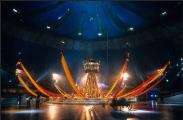
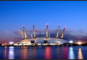
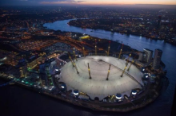
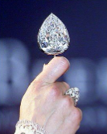

The Millennium Dome for junior classes
The Millennium Dome is a big building in the shape of a dome. It is located in Greenwich Peninsula in southeast London.
Features



- Diameter: 365 meters
- Circumference: about 1 kilometer
- Arena area under the dome: 8 hectares
- The Prime Meridian passes through the west side of the dome.
The Prime Meridian is the line used as the starting point for measuring longitude. Its longitude is 0 degrees. The architect is Richard Rogers.
The building design was made by Buro Happold. The roof weighs less than the air inside the building. The construction finished in 1999. There was an exhibition called the Millennium Dome Show in the Millennium Dome. S
Inside the building, there were many things. For example, there was a playground called "Millennium Timers," a coin minting machine with the Royal Mint, a bus from the 1951 Festival of Britain, and the Millennium Star Jewels.
Inside the dome, there were also art installations and sculptures, like the Millennium Map, the Childhood Cube, and "Looking Around" (a hidden installation).
The Millennium Dome for senior classes
The Millennium Dome is a big building in the shape of a dome. It is in Greenwich Peninsula in southeast London. The design was made by architect Richard Rogers.
Construction finished in 1999.
The exhibition was open for visitors from January 1 to December 31, 2000. The project had some problems because the number of visitors was not as high as expected. This created financial difficulties.
Architecture
The dome looks like a big white tent with 12 yellow support towers that are 100 meters high.
Some features

The roof is a giant white structure that looks like an eggshell. The roof is held up by 12 100-meter tall masts.
From these supports, there are cables that are more than 70 kilometers long. They give the dome its shape and support the structure. The dome covering is made of super-light fiberglass with white Teflon. The Teflon roof membrane, reinforced with fiberglass, weighs less than the air inside the dome.
Exhibitions

The Millennium Dome had the Millennium Dome Show. Inside the building, there was a playground called "Millennium Timers," a coin minting machine with the Royal Mint, and De Beers showed a unique collection called "Millennium Diamonds" worth over 200 million dollars. This collection attracted the attention of robbers who broke into the exhibition with a bulldozer. The diamonds were in the hands of the criminals, and they only needed to get to the Thames and switch to a speedboat. However, their bold dreams did not come true. The police caught the thieves and stopped the robbery of the century.
Inside the dome, there were also art installations and sculptures, like the Millennium Map, the Childhood Cube, and "Looking Around" (a hidden installation).